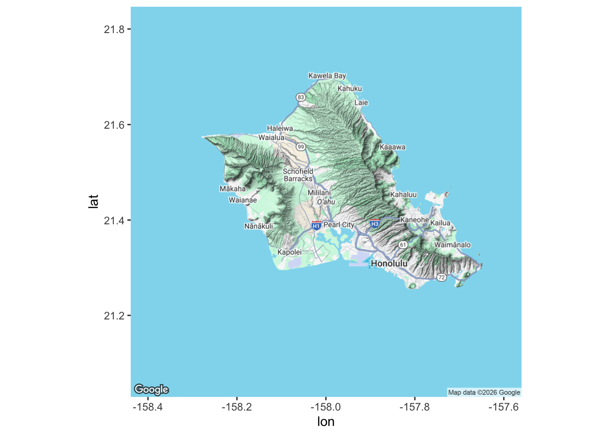
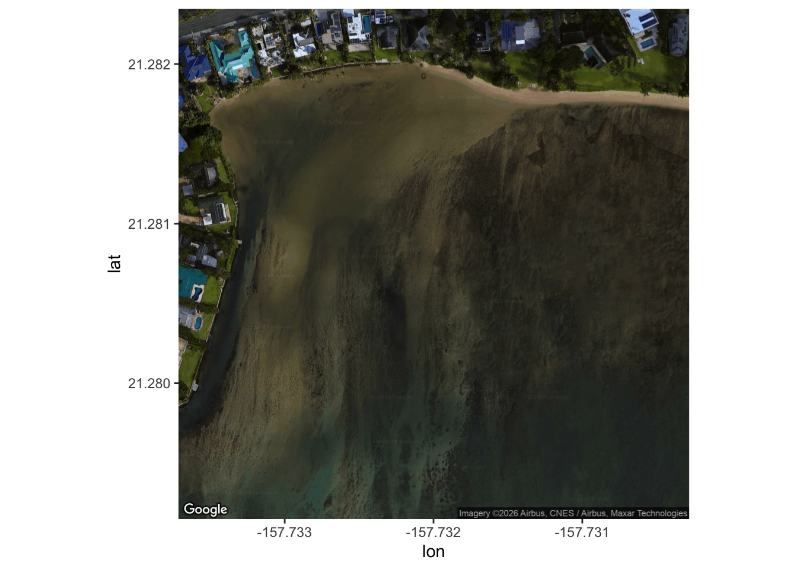
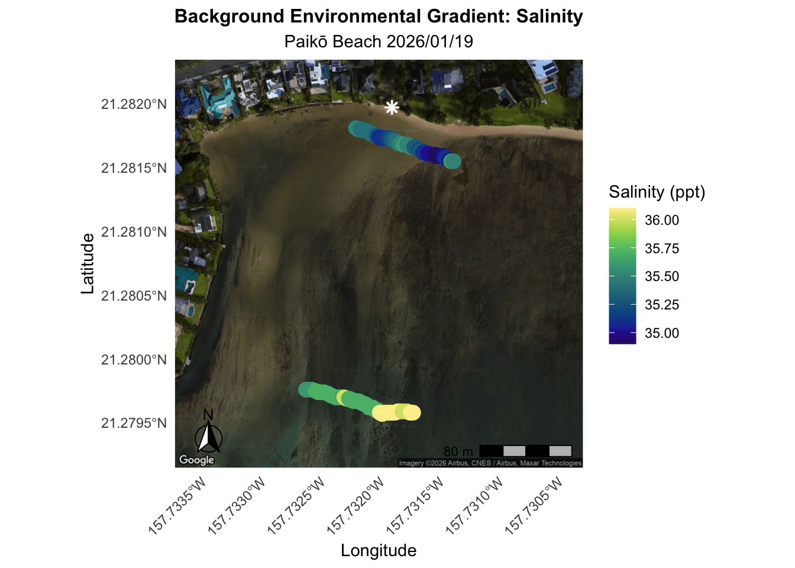
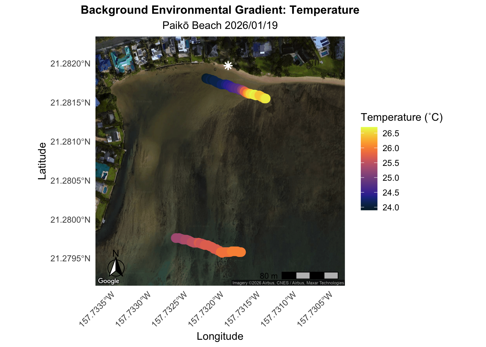
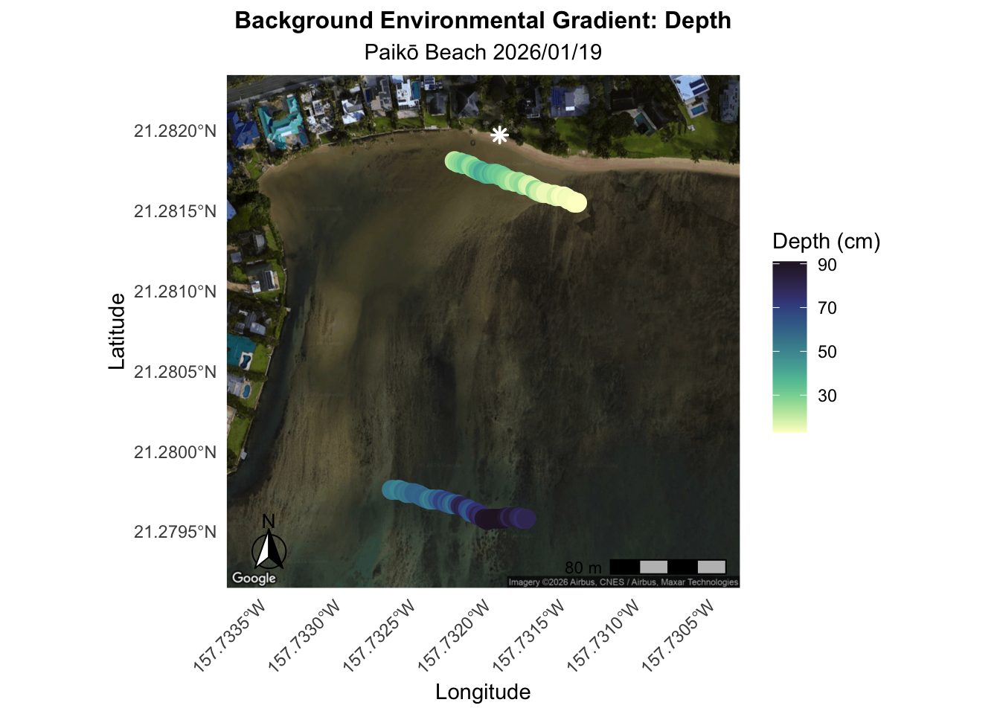

library(tidyverse)
library(here)
library(ggplot2)
library(cmocean) # colors
library(ggspatial)
library(ggmap)
library(forcats)
library(stringr)
library(sf)Background Environmental Data
Introduction
Preliminary Background Environmental Data
Location: Paikō Beach in Maunalua Bay
Description: On January 1st, 2026, Haley and Mica took environmental data at Paikō Beach in Maunalua Bay. Three 30m transects were laid out (one transect at a time) parallel to shore (alongshore) at an inshore location and an offshore location near the western end of the beach adjacent to a freshwater fishpond site (Kalauha‘iha‘i Fishpond) with potential SGD implications.
Measurements of salinity, temperature, depth, and coordinates were recorded every 2m along the transect.
Low tide was 0.0ft at 11:18 and high tide was 0.7ft at 15:51. Sampling inshore began at 10:59 and offshore began at 12:57.
Metrics Measured:
- Salinity (ppt)
- Temperature (˚C)
- Depth (cm)
- Coordinates (decimal degrees)
- Algae/slug observations
Helpful Resources for this code:
- ggmap article
- Making plots with ggmap.
- Setting up ggmap.
- cmocean color palette good for oceanography.
Google Static Map:
Code for installing google maps: register_google(key = “your key here”, write = TRUE) # use your own api
- IMPORTANT don’t put your key to github!! I usually save mine in a text file and import it each time (need to reload it if update R or new computer)
- Setting write = TRUE will write the API key to your R environment so that you do not have to re register it each time
Load Libraries
Read in Data
EnviroData<-read_csv(here("Data","background_enviro_data.csv"))
glimpse(EnviroData)Rows: 96
Columns: 12
$ date <date> 2026-01-19, 2026-01-19, 2026-01-19, 2026-01-…
$ location <chr> "inshore", "inshore", "inshore", "inshore", "…
$ transect <dbl> 1, 1, 1, 1, 1, 1, 1, 1, 1, 1, 1, 1, 1, 1, 1, …
$ transect_point <dbl> 0, 2, 4, 6, 8, 10, 12, 14, 16, 18, 20, 22, 24…
$ sample_time <time> 10:59:34, 11:01:29, 11:02:56, 11:04:53, 11:0…
$ temp_c <dbl> 23.9, 24.0, 24.0, 24.0, 24.1, 24.0, 24.1, 24.…
$ salinity_ppt <dbl> 35.5, 35.5, 35.4, 35.4, 35.4, 35.4, 35.4, 35.…
$ depth_cm <dbl> 21, 25, 26, 27, 29, 33, 27, 25, 29, 35, 35, 4…
$ lat_dd <dbl> 21.28181, 21.28180, 21.28180, 21.28180, 21.28…
$ long_dd <dbl> 157.7322, 157.7322, 157.7321, 157.7321, 157.7…
$ lat_maunal_converted_dd <dbl> 21.28181, 21.28180, 21.28180, 21.28180, 21.28…
$ long_manual_converted_dd <dbl> 157.7322, 157.7322, 157.7322, 157.7321, 157.7…Clean the Data
# CLEAN THE DATA
EnviroData <- EnviroData %>%
mutate(long_dd = ifelse(long_dd > 0, -long_dd, long_dd)) # change the sign for longitude to negative b/c it is West
glimpse(EnviroData)Rows: 96
Columns: 12
$ date <date> 2026-01-19, 2026-01-19, 2026-01-19, 2026-01-…
$ location <chr> "inshore", "inshore", "inshore", "inshore", "…
$ transect <dbl> 1, 1, 1, 1, 1, 1, 1, 1, 1, 1, 1, 1, 1, 1, 1, …
$ transect_point <dbl> 0, 2, 4, 6, 8, 10, 12, 14, 16, 18, 20, 22, 24…
$ sample_time <time> 10:59:34, 11:01:29, 11:02:56, 11:04:53, 11:0…
$ temp_c <dbl> 23.9, 24.0, 24.0, 24.0, 24.1, 24.0, 24.1, 24.…
$ salinity_ppt <dbl> 35.5, 35.5, 35.4, 35.4, 35.4, 35.4, 35.4, 35.…
$ depth_cm <dbl> 21, 25, 26, 27, 29, 33, 27, 25, 29, 35, 35, 4…
$ lat_dd <dbl> 21.28181, 21.28180, 21.28180, 21.28180, 21.28…
$ long_dd <dbl> -157.7322, -157.7322, -157.7321, -157.7321, -…
$ lat_maunal_converted_dd <dbl> 21.28181, 21.28180, 21.28180, 21.28180, 21.28…
$ long_manual_converted_dd <dbl> 157.7322, 157.7322, 157.7322, 157.7321, 157.7…Create Maps
Practice for myself.
Oahu<-get_map("Oahu")
ggmap(Oahu)
Get coordinates for Paiko on Oahu and mark where freshwater source may be.
# Mark where the potential SGD/outflow source is
outflow_point <- data.frame(long_dd = -157.731888, lat_dd = 21.281972)
#Make a data frame of lon and lat coordinates
Paiko<-data.frame(lon = -157.73200, lat = 21.28075) # coordinates for Paiko
# Get base layer
PaikoMap<-get_map(Paiko, zoom = 18, maptype = "satellite") # Paiko in Maunalua now the center of map
# in satellite map type
# zoomed in around study site
# 3 is really **zoomed out** like Pacific Ocean
# 20 is really **zoomed IN** would be like a single building
# plot it
ggmap(PaikoMap)
Potential freshwater SGD/outflow source from Google Maps: 21°16’55.1”N 157°43’54.8”W Converted to decimal degrees: 21.28197222˚, -157.73188889˚
Salinity Map
Plot salinity values of each sampling point along site:
# PLOT THE SALINITY MAP
ggmap(PaikoMap)+
geom_point(data = EnviroData, # environmental data
aes(x = long_dd, y = lat_dd, color = salinity_ppt), # column of long and lat and salinity
size = 4) +
scale_color_gradientn(colors = cmocean("haline")(256))+ # custom haline color scheme from cmocean package
#scale_color_viridis_c() +
geom_point(data = outflow_point, # add potential source marker as a star!
aes(x = long_dd, y = lat_dd), inherit.aes = FALSE,
shape = 8, size = 2, stroke = 1, color = "white") +
coord_sf(crs = 4326) + # scale bar to work, needs to be in this typical coordinate reference system for a GPS (WGS84)
annotation_scale(bar_cols = c("black","grey"), # make the colors black and grey
location = "br", # put the bar on the bottom right
pad_x = unit(0.25, "cm")) +
annotation_north_arrow(location = "bl",
style = north_arrow_fancy_orienteering,
height = unit(1, "cm"), width = unit(1, "cm"),
pad_y = unit(0.25, "cm")) + # add style and make north arrow smaller
labs(x = "Longitude",
y = "Latitude",
title = "Background Environmental Gradient: Salinity",
subtitle = "Paikō Beach 2026/01/19",
color = "Salinity (ppt)") + # legend label
theme_minimal(base_size = 11) + # labels/theme for a pub visualization
theme(panel.grid = element_blank(),
plot.title = element_text(face = "bold", size = 12, hjust = 0.5),
plot.subtitle = element_text(size = 11, hjust = 0.5),
axis.text.x = element_text(angle = 45, hjust = 1))
# ggsave(here("Output","salinityplot_january2026.png"))

Figure 1 shows the salinity gradient between inshore and offshore locations at Paikō Beach in Maunalua Bay. Three 30m transects between the two locations were measured for salinity every 2m. Transects were set up adjacent and in-line with the potential SGD/outflow source. Potential source marked with a white star. Site may have a lot of groundwater. More saline water away from shore.
Temperature Map
Plot temp values of each sampling point along site:
# PLOT THE TEMPERATURE MAP
ggmap(PaikoMap)+
geom_point(data = EnviroData, # environmental data
aes(x = long_dd, y = lat_dd, color = temp_c), # column of long, lat, temp
size = 4) +
scale_color_cmocean(name = "thermal", breaks = scales::pretty_breaks(n = 6))+ # custom haline color scheme from cmocean package
geom_point(data = outflow_point, # add potential source marker as a star!
aes(x = long_dd, y = lat_dd), inherit.aes = FALSE,
shape = 8, size = 2, stroke = 1, color = "white") +
annotation_scale(bar_cols = c("black","grey"), # make the colors black and grey
location = "br", # put the bar on the bottom right
pad_x = unit(0.25, "cm")) +
annotation_north_arrow(location = "bl",
style = north_arrow_fancy_orienteering,
height = unit(1, "cm"), width = unit(1, "cm"),
pad_y = unit(0.25, "cm")) + # add style and make north arrow smaller
coord_sf(crs = 4326) + # scale bar to work, needs to be in this typical coordinate reference system for a GPS (WGS84)
labs(x = "Longitude",
y = "Latitude",
title = "Background Environmental Gradient: Temperature",
subtitle = "Paikō Beach 2026/01/19",
color = "Temperature (˚C)") + # legend label
theme_minimal(base_size = 11) + # labels/theme for a pub visualization
theme(panel.grid = element_blank(),
plot.title = element_text(face = "bold", size = 12, hjust = 0.5),
plot.subtitle = element_text(size = 11, hjust = 0.5),
axis.text.x = element_text(angle = 45, hjust = 1))
# ggsave(here("Output","tempplot_january2026.png"))

Figure 2 shows the temperature gradient between inshore and offshore locations at Paikō Beach in Maunalua Bay. Warmer temperatures seem to be exhibited closer to the potential SGD/outflow source. The offshore gradient seems to show less variability. Potential source marked with a white star.
Depth Map
# PLOT THE DEPTH MAP
ggmap(PaikoMap)+
geom_point(data = EnviroData, # environmental data
aes(x = long_dd, y = lat_dd, color = depth_cm), # column of long, lat, depth
size = 4) +
scale_color_cmocean(name = "deep", direction = 1)+ # custom haline color scheme from cmocean package
geom_point(data = outflow_point, # add potential source marker as a star!
aes(x = long_dd, y = lat_dd), inherit.aes = FALSE,
shape = 8, size = 2, stroke = 1, color = "white") +
annotation_scale(bar_cols = c("black","grey"), # make the colors black and grey
location = "br", # put the bar on the bottom right
pad_x = unit(0.25, "cm")) +
annotation_north_arrow(location = "bl",
style = north_arrow_fancy_orienteering,
height = unit(1, "cm"), width = unit(1, "cm"),
pad_y = unit(0.25, "cm")) + # add style and make north arrow smaller
coord_sf(crs = 4326) + # scale bar to work, needs to be in this typical coordinate reference system for a GPS (WGS84)
labs(x = "Longitude",
y = "Latitude",
title = "Background Environmental Gradient: Depth",
subtitle = "Paikō Beach 2026/01/19",
color = "Depth (cm)") + # legend label
theme_minimal(base_size = 11) + # labels/theme for a pub visualization
theme(panel.grid = element_blank(),
plot.title = element_text(face = "bold", size = 12, hjust = 0.5),
plot.subtitle = element_text(size = 11, hjust = 0.5),
axis.text.x = element_text(angle = 45, hjust = 1))
# ggsave(here("Output","depthplot_january2026.png"))

Figure 3 shows the depth gradient between inshore and offshore locations at Paikō Beach in Maunalua Bay. Deeper depth exhibited offshore. Potential source marked with a white star.
Calculate Means
EnviroData_means<-EnviroData%>%
# Pivot Longer
pivot_longer(cols = c(temp_c, salinity_ppt, depth_cm), # parameters
names_to = "Variable", # columns for those
values_to = "Value") %>% # measurement and all metadata
# Summarise Means and Variances
group_by(location, Variable) %>% # group by inshore/offshore and variables
summarise(parameter_mean = mean(Value, na.rm = TRUE)) # get mean
EnviroData_means# A tibble: 6 × 3
# Groups: location [2]
location Variable parameter_mean
<chr> <chr> <dbl>
1 inshore depth_cm 25.3
2 inshore salinity_ppt 35.3
3 inshore temp_c 25.0
4 offshore depth_cm 70.6
5 offshore salinity_ppt 35.8
6 offshore temp_c 25.7Extra
# ggsave(here("Output", "plot_january2026.jpg"))
# To do before running code:
# Empty your environment before you start working
# Restart R
# .rs.restartR()
# remove whole list in environment
# rm(list = ls())Forloop variation_equation<-function(variance, mean) { # name the function and add arguments variation<- variance / ((mean)^2) # put in equation for pH? variation return(variation) # output the result }
pH_wailupe_variation<-chemdata %>% drop_na(pH) %>% # drop NAs for pH group_by(Site, Lat, Long) %>% filter(Site == “W”) %>% # filter only Wailupe site summarise(pH_mean = mean(pH, na.rm = TRUE), # get means pH_variance = var(pH, na.rm = TRUE)) %>% # get variances mutate(variation = variation_equation(pH_variance, pH_mean)) # calculate variation using my function
pH_wailupe_variation